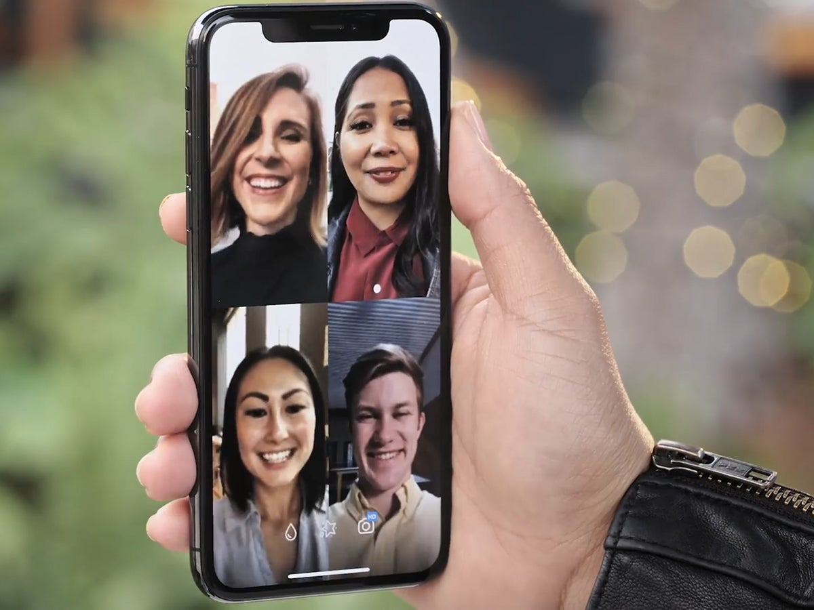
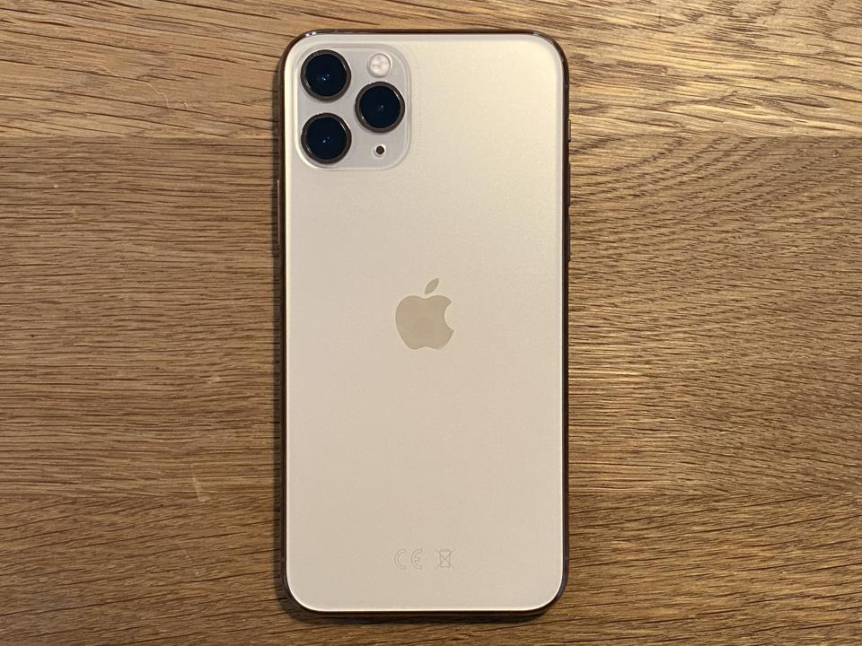

Blog Posts
Check out some of my blogs on how technology has effect our lives

Computers
Life without computers is unimaginable. It impacts every part of my life. From gaming to just sending an email, computers are irreplacable. I find myself hung up on the computer for most of my time these days. Let's not forget how important they are for online classes.
Camera
Wherever we go, whatever we do, cameras help us capture those memory fragments and hold onto them forever. We click photos with friends and family. Photos keep our precious memories frozen in time.

Video Conference
When our relatives or friend's are halfway across the planet, video conferencing comes in. We get to talk to them and see them from the comfort of our homes. Video conferencing is also very important for meetings in companies and online classes.

Smartphones